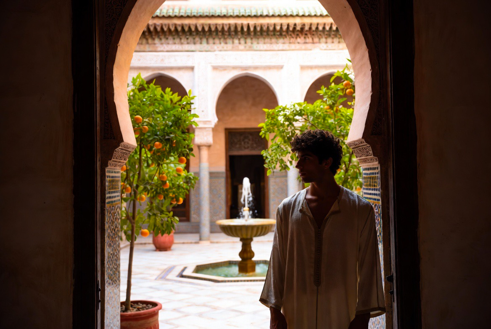
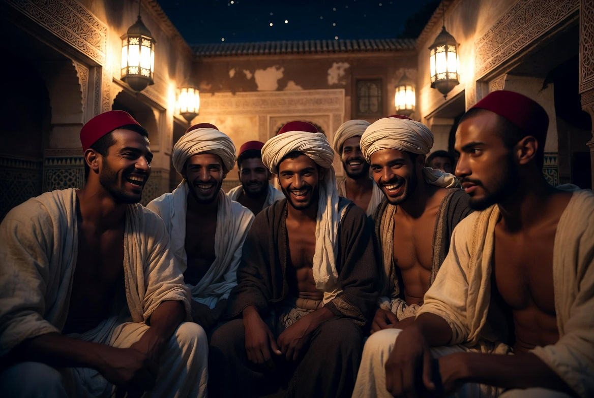
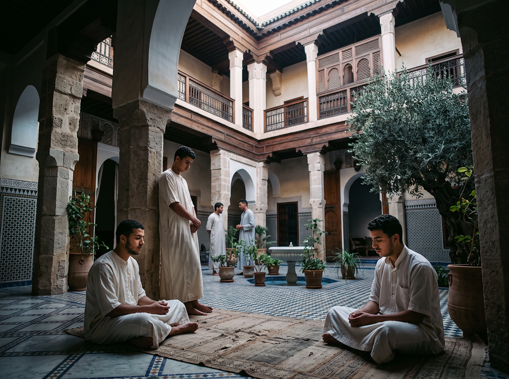

Le Projet
Riad Al-Uns n’est pas un hôtel. C’est une demeure traditionnelle et une communauté intentionnelle : formation de jeunes hommes, beauté du geste, rythme de la tradition, hospitalité rare.

Une culture vivante
Ce projet montre l’actualité de la culture islamique : sa beauté, ses liens avec le monde méditerranéen, l’influence qu’elle a exercée en Espagne, en Sicile et au-delà.
Il s’agit d’un discours de tradition et de fierté des racines — pour un modèle de vie ordonné qui, aujourd’hui, retrouve tout son sens.
Quatre piliers

Dar al-Hiraf
Maison des métiers et résidence pour jeunes hommes non mariés. Formation du geste, du corps et du caractère.

La beauté
Architecture, jardin, matières, relations. Équilibre et dignité non négociables.

Le rythme
Cinq prières, travail, étude, repas partagés, silence.

L’hospitalité sélective
Très peu d’hôtes. Diyafa de haute qualité.
La maison forme avant d’accueillir. Ce qui se transmet ici peut, demain, se propager.